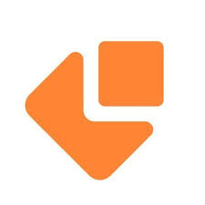

Stage de Fin d'Année
Site Vitrine FRANAFRIX
Janvier 2026 — Février 2026Déploiement IT & Logistique Internationale

Analyse du Projet
FRANAFRIX est une entreprise spécialisée dans l'intégration de solutions ServiceNow et l'exportation IT. Ma mission a été de concevoir l'intégralité de leur identité numérique, en transformant une maquette graphique en un site web professionnel, performant et Responsive Design.
Réalisations Techniques
- Développement sur mesure : Structure HTML5/CSS3 propre sans CMS pour un chargement ultra-rapide.
- Intégration API : Mise en place d'un formulaire de contact dynamique via EmailJS.
- Responsive Design : Adaptation complète sur mobiles et tablettes via Media Queries.
- Optimisation SEO : Configuration des balises Meta et indexation Google pour la visibilité internationale.
Technologies & Outils
 HTML5 / CSS3
HTML5 / CSS3
 JavaScript
JavaScript

EmailJS API VS Code
VS Code
Pages Développées
- Expertise ServiceNow : Présentation des modules ITSM/ITOM et méthodologie de déploiement.
- Export & Logistique : Gestion des pôles Industrie, Médical et BTP à l'international.
- Blog : Espace de veille technologique sur la transformation digitale.
- FAQ & Support : Aide aux clients sur les délais et procédures d'export.
Bilan et Compétences
- Autonomie complète sur le cycle de vie d'un projet web professionnel.
- Maîtrise de l'intégration de services tiers (EmailJS).
- Expérience concrète du déploiement en production (Hébergement & DNS).